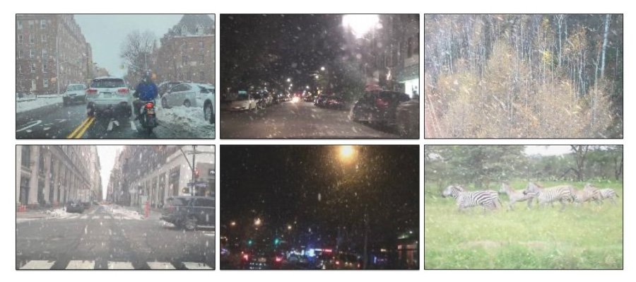

Haoyu Chen
PhD student @ HKUST(GZ)
I received a Bachelor degree in Computer Science and Engineering at The Chinese University of Hong Kong, Shenzhen (CUHKSZ) in 2021.
I am a Ph.D. student at the Hong Kong University of Science and Technology (Guangzhou) advised by Prof. Lei Zhu.
Mainly intrest in computer vision, especially in Low-level Vision and Image Processing.
News
- 2023-07: Three papers to appear in ACM MM 2023.
- 2023-07: One first author paper to appear in ICCV 2023.
- 2023-04: One paper to appear in ICML 2023.
- 2023-02: One first author paper to appear in CVPR 2023.
- 2022-09: I am now a Ph.D. student at HKUSTGZ.
Education

The Chinese University of Hong Kong, Shenzhen
B.Eng., Major in Computer Science and Engineering, Sep 2017 - Jul 2021.
Publications

|
ACM MM, 2023
Hongtao Wu, Yijun Yang, Haoyu Chen, Jingjing Ren, Lei Zhu [paper] |

|
ACM MM, 2023
SiXiang Chen*, Tian Ye*, Chenghao Xue, Haoyu Chen, Yun Liu, Erkang Chen, Lei Zhu [paper] |
|
ACM MM, 2023
SiXiang Chen*, Tian Ye*, Yun Liu, Jinbin Bai, Haoyu Chen, Yunlong Lin, Jun Shi, Erkang Chen [paper] |
|
|  |
ICCV, 2023
Haoyu Chen, Jingjing Ren, Jinjin Gu, Hongtao Wu, Xuequan Lu, Haoming Cai, Lei Zhu [arxiv] [Code] [Dataset] |

|
ICML, 2023
Ruofan Zhang, Jinjin Gu, Haoyu Chen , Chao Dong, Yulun Zhang, Wenming Yang [arxiv] [Code] |

|
CVPR, 2023
Haoyu Chen*, Jinjin Gu*, Yihao Liu, Salma Abdel Magid, Chao Dong, Qiong Wang, Hanspeter Pfister, Lei Zhu [arxiv] [Code] |

|
arXiv, 2021
Haoyu Chen, Jinjin Gu, Zhi Zhang [arxiv] [Code] |

|
ECCV, 2020
Jinjin Gu, Haoming Cai, Haoyu Chen, Xiaoxin Ye, Jimmy S.Ren, Chao Dong [Website] [arxiv] [Code] [Benchmark] [CVPR 2022 NTIRE Challenge] [Youtube] [Bilibili] |

|
arXiv, 2018
Jinjin Gu, Haoyu Chen, Guolong Liu, Gaoqi Liang, Xinlei Wang, Junhua Zhao [arxiv] |
1 CVPR 1 ICCV 1 ECCV 1 ICML 3 ACM MM 2 arXiv
Experience

Xiaobing.AI
2021.6 ~ 2022.2. Research Intern. Mentor: Dr. Baoyuan, Wang

AWS Shanghai AI Lab
2020.5 ~ 2020.11. Software Develop Engineer Intern. Mentor: Zhi Zhang
Institute of Automation Chinese Academy of Sciences
2018.8 ~ 2018.9. Research Assistant. Advisor: Dr. Bo Xu
Academic Service & Awards
Competition Awards
IEEE ICDM 2018 global AI challenge on meteorology, 1st place.
ECCV 2020 Workshop, AIM 2020 Challenge on Video Extreme Super-Resolution, 4th place.
Program Committee / Reviewer
IEEE Conference on Computer Vision and Pattern Recognition (CVPR), 2024
ACM Multimedia (ACM MM), 2023
ACM SIGKDD Conference on Knowledge Discovery and Data Mining (KDD), 2023
SIAM International Conference on Data Mining (SDM), 2024
Winter Conference on Applications of Computer Vision (WACV), 2023, 2024
ACM SIGGRAPH VRCAI, 2022
IEEE Transactions on Circuits and Systems for Video Technology
The Computer Vison
Hobbies & Interests

Outdoor

Travelling

Music